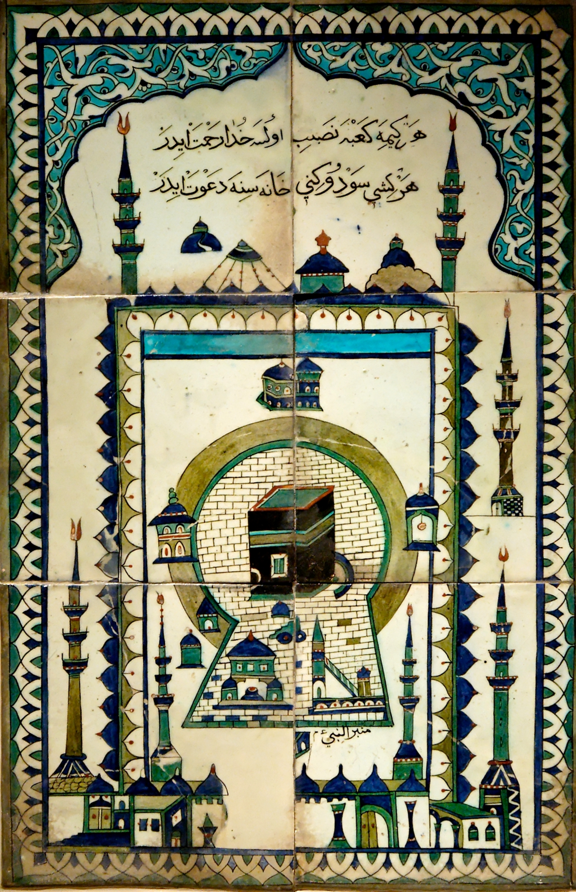
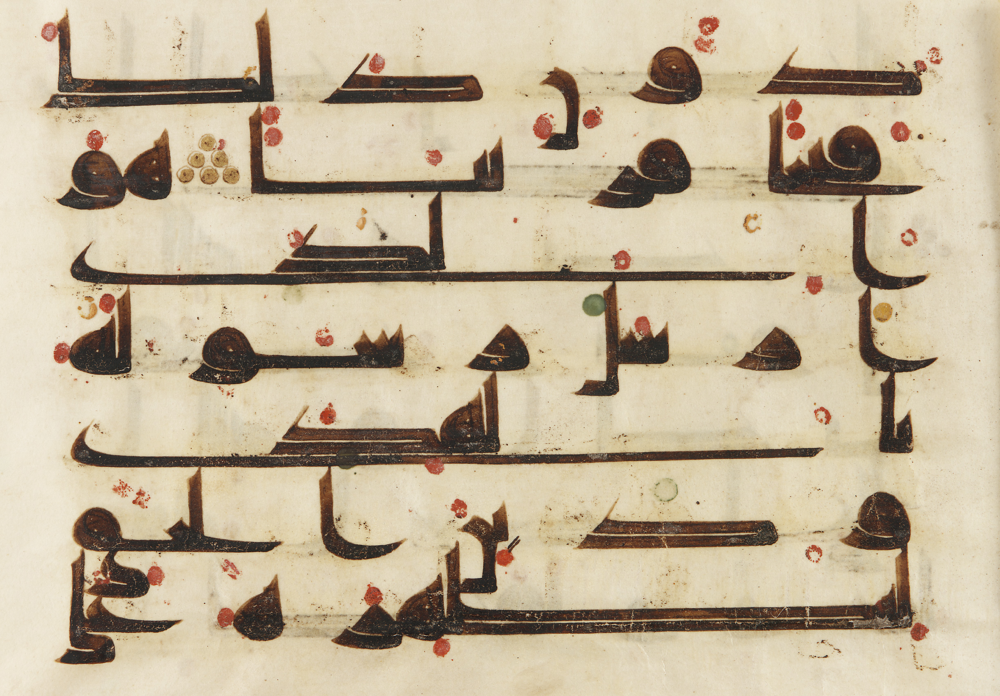

1. Η Προϊσλαμική Αραβία: Η «Εποχή της Άγνοιας» (Jahiliyyah) & οι Κρεμαστές Ωδές
Στις αρχές του 7ου αιώνα μ.Χ., ανάμεσα στις δύο εξαντλημένες αυτοκρατορίες της εποχής —τη Βυζαντινή και τη Σασανιδική Περσική— εκτεινόταν η αχανής, άνυδρη Αραβική Χερσόνησος. Οι κάτοικοί της, νομάδες Βεδουίνοι (A`rab), ζούσαν οργανωμένοι σε αυτάρκεις φυλές, συνδεδεμένοι με αδυσώπητους κώδικες αίματος και φυλετικής αλληλεγγύης (Asabiyyah).
Η εποχή αυτή ονομάζεται από τη μουσουλμανική παράδοση Jahiliyyah (Εποχή της Άγνοιας), λόγω της έλλειψης γραπτού θεϊκού νόμου. Ωστόσο, οι Βεδουίνοι είχαν αναπτύξει έναν αυστηρότατο κώδικα τιμής (Muruwwah), με κορωνίδα την ιερή, απαραβίαστη φιλοξενία, και μια εκπληκτική προφορική ποίηση: τις περίφημες Κρεμαστές Ωδές (Al-Mu'allaqat), που κεντιόνταν με χρυσά γράμματα σε μαύρο μετάξι και κρέμονταν στους τοίχους της Κάαμπα.
Η Σκοτεινή Πλευρά & η Κοινωνική Τομή του Ισλάμ: Μέσα στην ακραία ένδεια της ερήμου και τον τρόμο της φυλετικής ατίμωσης, πολλοί πατεράδες εφάρμοζαν το φρικτό έθιμο της ταφής των θηλυκών βρεφών (Wa'd al-banat), θάβοντας ζωντανά τα νεογέννητα κοριτσάκια στην άμμο! Το Ισλάμ κατήργησε ρητά και απόλυτα αυτή τη βαρβαρότητα (Σούρα 81:8–9: «Και όταν το θαμμένο ζωντανό κορίτσι ερωτηθεί για ποια αμαρτία θανατώθηκε...»). Παράλληλα, το Κοράνι παραχώρησε στις γυναίκες ρητό δικαίωμα ιδιοκτησίας, κληρονομιάς, διαζυγίου και ανεξάρτητης διαχείρισης περιουσίας — δικαιώματα που οι Ευρωπαίες γυναίκες απέκτησαν μόλις στα τέλη του 19ου αιώνα!
Η Μέκκα, το Εμπόριο & το Ιερό της Κάαμπα: Όπως τονίζει η καθηγήτρια, όταν σκεφτόμαστε την αρχαία Αραβία, η πρώτη εικόνα που έρχεται στον νου είναι μια αφιλόξενη έρημος όπου υπό σκιάν η θερμοκρασία φτάνει τους 57 βαθμούς και στον ήλιο τους 75, με ταλαιπωρημένες καμήλες και Βεδουίνους τυλιγμένους σε υφάσματα. Κι όμως, η περιφέρεια της χερσονήσου βρεχόταν από τρεις κρίσιμες θάλασσες (την Ερυθρά Θάλασσα, τον Περσικό Κόλπο και τον Ινδικό Ωκεανό) και υπήρξε επί χιλιετίες κοσμοπολίτικο σταυροδρόμι παγκόσμιου ναυτικού εμπορίου, όπου το αρωματικό λιβάνι ζυγιζόταν γραμμάριο προς γραμμάριο με καθαρό χρυσάφι! «Τα παραμύθια ενός λαού αντανακλούν πάντα τη ζωή του», παρατηρεί η Μαρία Ευθυμίου: «στις Χίλιες και Μία Νύχτες, σχεδόν σε κάθε ιστορία πρωταγωνιστούν έμποροι και τολμηροί καπετάνιοι, όπως ο Σεβάχ ο Θαλασσινός που ναυαγεί, σώζεται και ξαναφτιάχνει καράβι! Δεν είναι καθόλου τυχαίο ότι το Ισλάμ είναι η μοναδική θρησκεία στον κόσμο της οποίας ο ιδρυτής υπήρξε επαγγελματίας έμπορος!».
Στη Χετζάζη, η πόλη της Μέκκας αποτελούσε τον εμπορικό και λατρευτικό άξονα των καραβανιών. Στο κέντρο της δέσποζε η Κάαμπα, ένας πανάρχαιος κυβικός ναός που φιλοξενούσε τον Μαύρο Λίθο (έναν ιερό μετεωρίτη που λατρευόταν ως ουράνιο σημάδι) και 360 είδωλα πολυθεϊστικών λατρειών, ελεγχόμενος από την πλούσια εμπορική αριστοκρατία των Κουραϊσιτών.

2. Ο Προφήτης Μωάμεθ και η Αποκάλυψη του Κορανίου
Γύρω στο 570 μ.Χ., μέσα στη φτωχότερη πατριά των Χασιμιτών, γεννήθηκε ο Μωάμεθ (Muhammad ibn Abdallah). Ορφανός από μικρός, διακρίθηκε ως έντιμος έμπορος (Al-Amin) και παντρεύτηκε την ευκατάστατη έμπορο Χαντίτζα. Το 610 μ.Χ., αποσυρόμενος για στοχασμό στη σπηλιά Χίρα, άκουσε τη φωνή του Αρχαγγέλου Γαβριήλ (Jibril) να τον προστάζει: «Ικρά!» (Απάγγειλε!).
Οι αποκαλύψεις αυτές συνεχίστηκαν επί 23 χρόνια και συνέθεσαν το Κοράνι (Al-Qur'an = η Απαγγελία). Αποτελείται από 114 Σούρες (κεφάλαια) και θεωρείται από τους μουσουλμάνους ο απαράλλαχτος, κατά λέξη άκτιστος Λόγος του Θεού (Kalam Allah), αναλλοίωτος μόνο στην αραβική γλώσσα.

Ο Ιησούς στο Ισλάμ, το Σοκ της Βλασφημίας & οι «Ολυμπιακοί Αγώνες» Αποστήθισης
Όπως υπογραμμίζει η Μαρία Ευθυμίου, ο Μωάμεθ στα νεανικά του ταξίδια με τα καραβάνια συζητούσε ακατάπαυστα με Εβραίους και Χριστιανούς της περιοχής — οι οποίοι στην πλειονότητά τους ήταν Μονοφυσίτες, Νεστοριανοί ή Αρειανιστές. Είναι χαρακτηριστικό ότι ακόμη και έναν αιώνα αργότερα, ο μεγάλος πατέρας της Εκκλησίας Ιωάννης ο Δαμασκηνός δεν είχε συνειδητοποιήσει πως πρόκειται για νέα θρησκεία, αλλά θεωρούσε τον Μωάμεθ χριστιανό αιρετικό, οπαδό του Αρείου!
Στο Κοράνι, η Παλαιά Διαθήκη και ο Ιησούς περιβάλλονται από βαθύτατο δέος. Το Ισλάμ θεωρεί τον Ιησού τον σπουδαιότερο προφήτη πριν από τον Μωάμεθ — όχι όμως Υιό του Θεού: «Το Ισλάμ στην ουσία "προστατεύει" τον Ιησού από τους ίδιους τους μαθητές του!», εξηγεί η καθηγήτρια. «Σου λέει: είναι δυνατόν ένας τόσο άγιος προφήτης να ξεστόμισε τέτοια βαρύτατη βλασφημία, ότι είναι γιος του Θεού; Αποκλείεται! Αυτό είναι αθλιότητα που του απέδωσαν οι οπαδοί του, γιατί ο Θεός είναι Ένας και μοναδικός!».
Μάλιστα, η καθηγήτρια αντιπαραβάλλει την απόλυτη ευλάβεια των μουσουλμάνων απέναντι στα θεία με τη νεοελληνική καθημερινότητα: «Στον μουσουλμανικό κόσμο, όταν προφέρεται το όνομα του Θεού ή των προφητών Του, πέφτει σιγή απόλυτου σεβασμού από πάνω μέχρι κάτω! Να διανοηθείς να βρίσεις το Θείο στο Ισλάμ; Forget it! Αν μιλήσετε με θερμούς μουσουλμάνους μετανάστες στη χώρα μας —Αιγύπτιους, Πακιστανούς, Ιρακινούς—, θα σας πουν ότι όταν πρωτοήρθαν στην Ελλάδα και άρχισαν να μαθαίνουν ελληνικά, δεν πίστευαν στα αυτιά τους! Άκουγαν τους Χριστιανούς σε κάθε δεύτερη κουβέντα να βρίζουν τον Χριστό και την Παναγία, και έλεγαν μεταξύ τους έντρομοι: "Μα πού ήρθαμε; Μας έφεραν σε λάθος χώρα; Είναι δυνατόν να βρίζουν τον Θεό τους;"».
Εξίσου συγκλονιστική είναι η ζωντανή παράδοση της απομνημόνευσης του ιερού κειμένου: επειδή ο ίδιος ο Μωάμεθ δεν γνώριζε γραφή και αποστήθισε τον λόγο του Αρχαγγέλου Γαβριήλ, η αποστήθιση του Κορανίου (Hifz) αποτελεί μέχρι σήμερα ύψιστη αρετή. «Αυτή τη στιγμή που μιλάμε», σημειώνει η Μαρία Ευθυμίου, «εκατομμύρια άνθρωποι σε κάποια κόγχη ενός τζαμιού μαθαίνουν το Κοράνι απ' έξω! Διοργανώνονται μάλιστα τηλεοπτικοί διαγωνισμοί —ένα είδος "Ολυμπιακών Αγώνων" αποστήθισης του Κορανίου—, όπου εκατομμύρια τηλεθεατές παρακολουθούν με κομμένη την ανάσα ανθρώπους από 9 έως 90 ετών να απαγγέλλουν το ιερό κείμενο χωρίς να κάνουν ούτε μισό λάθος στην προφορά!».
3. Η Εγίρα (622 μ.Χ.) και η Ίδρυση της Ummah
Η καταδίκη της ειδωλολατρίας και της κοινωνικής αδικίας εξόργισε τους άρχοντες της Μέκκας. Το 622 μ.Χ., ο Μωάμεθ και οι πιστοί του κατέφυγαν στην όαση Γιαθρίμπ, η οποία μετονομάστηκε σε Μεδίνα (Madinat an-Nabi = η Πόλη του Προφήτη). Η μετανάστευση αυτή, η Εγίρα (Hijra), αποτελεί το Έτος 1 του Μουσουλμανικού Ημερολογίου.
Στη Μεδίνα, ο Μωάμεθ συνέταξε το περίφημο Σύνταγμα της Μεδίνας, ιδρύοντας την Ummah: την υπερεθνική κοινότητα των πιστών. Για πρώτη φορά στην ιστορία της Αραβίας, η πίστη υποκατέστησε το αίμα της φυλής. Όλοι οι πιστοί έγιναν αδέλφια ενώπιον του Αλλάχ. Το 630 μ.Χ., ο Προφήτης επέστρεψε θριαμβευτής στη Μέκκα χωρίς αιματοχυσία, συγχώρησε τους διώκτες του και καθάρισε την Κάαμπα από όλα τα είδωλα.
Ο Προφήτης ως «Δήμαρχος» και η Γέννηση του Ιερού Νόμου (Σαρία)
Στη Μεδίνα, ο Μωάμεθ δεν υπήρξε απλώς ένας πνευματικός δάσκαλος, αλλά ένας πρακτικός πολιτικός ηγέτης και διοικητής. «Έχουμε κείμενα του Μωάμεθ που είναι αποφάσεις ενός δημάρχου, ενός νομάρχη, ενός περιφερειάρχη!», τονίζει χαρακτηριστικά η Μαρία Ευθυμίου. «Έλυνε καθημερινά προβλήματα της πόλης, ζητήματα συνύπαρξης, έκανε πολέμους, υπέγραφε συνθήκες! Ενώ η Καινή Διαθήκη στον χριστιανισμό αποτελείται από όμορφες, γενικόλογες ιστορίες που δίνουν απλώς μια ηθική κατεύθυνση, το Ισλάμ είναι μια βαθύτατα κανονιστική θρησκεία — έσπασε το κοντέρ της κανονιστικότητας! Στο Κοράνι και στις αποφάσεις του Προφήτη βρίσκεις ολόκληρα τμήματα αστικού και ποινικού δικαίου: τι τιμωρία επιβάλλεται στον κλέφτη, τι στον μοιχό, πώς ρυθμίζεται η καθημερινή διοίκηση. Και αφού το υπέγραψε ο Προφήτης, τα σκυλιά δεμένα! Τελείωσε!».
Έτσι συγκροτήθηκε η Σαρία (Sharia), ο Ιερός Νόμος του Ισλάμ, ο οποίος αντλεί από:
- Το Κοράνι: Τον αυτούσιο λόγο του Θεού.
- Τη Σούννα και τα Χαντίθ (Hadith): Τις πράξεις, τις αποφάσεις του Προφήτη και τις γραπτές αναμνήσεις των συντρόφων του από την κοινή τους δράση. Όπως επισημαίνει με γλαφυρότητα η καθηγήτρια, στους δύο πρώτους αιώνες μετά τον θάνατο του Μωάμεθ (632 μ.Χ.), οι ανώτατοι θεολόγοι και νομικοί του Ισλάμ —οι Ουλεμάδες (ιμάμηδες, μουφτήδες, σεϊχουλισλάμηδες, καθώς το Ισλάμ δεν έχει μυστήρια ούτε ιερατείο με τη χριστιανική έννοια)— έγραψαν μελέτες «από δω μέχρι τη Μέκκα» για να ξεδιαλύνουν την αυθεντικότητα αυτών των παραδόσεων. Κι αυτό διότι είχαν ενσωματωθεί στη Σαρία ακόμη και κείμενα που ξεκινούσαν με τη φράση: «Εγώ, ο ταπεινός δούλος του Θεού Μαχμούτ, άκουσα από τον παππού μου, που άκουσε από τον προπάππο του, ότι κάποτε ο Προφήτης είπε αυτό...»! Το τεράστιο αυτό νομικό οικοδόμημα εξισορροπείται, ωστόσο, στην πράξη από την εκπληκτική απλότητα των πέντε βασικών καθηκόντων του πιστού.
4. Οι Πέντε Στύλοι του Ισλάμ (Arkan al-Islam)
- Σαχάντα (Shahada): Η ομολογία: «Δεν υπάρχει άλλος θεός εκτός από τον Αλλάχ, και ο Μωάμεθ είναι ο Προφήτης Του».
- Σαλάτ (Salat): Πενθήμερη προσευχή με τελετουργικό καθαρμό (Wudu) και υπόκλιση προς τη Μέκκα (Qibla).
- Ζακάτ (Zakat): Υποχρεωτική ελεημοσύνη (2,5%) για την ανακούφιση των φτωχών και των ορφανών.
- Σαούμ (Sawm): Αυστηρή νηστεία από την ανατολή έως τη δύση καθ' όλη τη διάρκεια του Ραμαζανιού.
- Χατζ (Hajj): Προσκύνημα στη Μέκκα τουλάχιστον μία φορά στη ζωή κάθε πιστού που δύναται.
Από τα Χαλάκια με την Ιαπωνική Πυξίδα στην «Ικαρία» του Ραμαζανιού
Η Μαρία Ευθυμίου ζωντανεύει τους Πέντε Στύλους και την καθημερινότητα του Ισλάμ μέσα από απολαυστικές εικόνες και αναλογίες:
- Η Απλότητα της Σαχάντα: «Το Σύμβολο της Πίστεως στο Ισλάμ είναι δυο κουβέντες όλες κι όλες: "Ένας είναι ο Αλλάχ και Προφήτης Του ο Μωάμεθ". Αν το πεις αυτό τρεις φορές μπροστά σε έναν Ουλεμά, έχεις καταγραφεί αυτομάτως ως μουσουλμάνος, τέλος! Εγώ δεν το ξαναλέω, το είπα ήδη δυο φορές εδώ μέσα και κινδυνεύω, σας το λέω!».
- Η Προσευχή, τα Μεγάφωνα & οι «Παμπόνηροι Ιάπωνες»: Πέντε φορές την ημέρα —από το πρώτο φως της αυγής στις 5:30 το πρωί μέχρι τη δύση— ο πιστός οφείλει να προσευχηθεί. «Πριν από την ανακάλυψη των μεγαφώνων, το κάλεσμα από τον μιναρέ θα ήταν συμπαθητικό· από τότε που μπήκαν τα μεγάφωνα, την ώρα της προσευχής τρίζει το σύμπαν!», σχολιάζει η καθηγήτρια. Ο μουσουλμάνος προσεύχεται όπου κι αν βρίσκεται — στο σπίτι, στον δρόμο, ακόμη και στην άκρη των κυλιόμενων διαδρόμων στο «διαστημικό» αεροδρόμιο του Χίθροου στο Λονδίνο, στρώνοντας ένα λεπτό πτυσσόμενο χαλάκι στραμμένο προς τη Μέκκα. «Εδώ σε θέλω όμως! Αν δεν έχεις καλή αίσθηση προσανατολισμού όπως η αφεντιά μου, που αν ήμουν μουσουλμάνα μονίμως τον πισινό μου θα είχα στραμμένο στη Μέκκα —με όλο τον σεβασμό— γιατί δεν θα ήξερα πού πέφτει; Οι παμπόνηροι οι Ιάπωνες, λοιπόν, που δεν έχουν καμία σχέση με το Ισλάμ αλλά έχουν μεγάλη σχέση με το επιχειρείν, είδαν ότι υπάρχουν πολλές "Μαρίες Ευθυμίου" στον κόσμο, είπαν "εδώ είναι η κότα με τα χρυσά αυγά" και έφτιαξαν χαλάκια προσευχής με ενσωματωμένη πυξίδα! Το ρίχνεις κάτω και έσωσες το σύστημα!».
- Το Ραμαζάνι ως «Ικαρία» & τα Επώνυμα «Χατζη-»: Στη νηστεία του Ραμαζανιού, από την ανατολή ως τη δύση του ηλίου δεν μπαίνει τίποτα στο στόμα — ούτε νερό, ούτε τσιγάρο, ούτε ένα φιλί στον αγαπημένο σου! Όταν το Ραμαζάνι πέφτει κατακαλόκαιρο σε χώρες με καύσωνα, η κοινωνία προσαρμόζεται έξυπνα: «Την ημέρα κλείνει το σύμπαν για οικονομία δυνάμεων, και μόλις δύσει ο ήλιος ανοίγουν τράπεζες, μπακάλικα, σούπερ μάρκετ και μετατίθεται όλη η ζωή τη νύχτα — Ικαρία ένα πράγμα! Βγαίνει μια χαρά!». Αντίστοιχα, όποιος εκπληρώνει το προσκύνημα στη Μέκκα (το Χατζ) αποκτά τον τιμητικό τίτλο του Χατζή. Από εκεί προέρχονται και τα ελληνικά επώνυμα (Χατζηιωάννου, Χατζηδημητρίου κ.λπ.), όχι επειδή οι πρόγονοί μας ήταν μουσουλμάνοι, αλλά επειδή επί Τουρκοκρατίας, όταν ένας Χριστιανός ταξίδευε στους Αγίους Τόπους και βαπτιζόταν στον Ιορδάνη, οι μουσουλμάνοι γείτονές του έλεγαν με σεβασμό: «Άιντε, έκανες κι εσύ το χατζ σου, έγινες Χατζής!».
- Η Φιλανθρωπία, τα Τζαμιά, οι Μεντρεσέδες & τα Χαμάμ: Η φιλανθρωπία αποτελεί την κορυφαία κοινωνική υποχρέωση στο Ισλάμ. Επειδή το Ισλάμ δεν τιμά αγίους, όλα τα τζαμιά και τα κοινωφελή ιδρύματα (δρόμοι, κρήνες, πτωχοκομεία) είναι δωρεές ευσεβών πλουσίων και φέρουν το όνομα του δωρητή («όπως λέμε εμείς Αρσάκειο ή Μαράσλειο»). Κάθε μουσουλμανική πόλη οφείλει να διαθέτει τρία θεμελιώδη κτίσματα: το Τζαμί, τον Μεντρεσέ (θεολογικό σχολείο όπου οι πιστοί μαθαίνουν αραβικά για να διαβάζουν το Κοράνι στο πρωτότυπο — γι' αυτό και η αραβική γλώσσα αφομοίωσε αρχαίους λαούς όπως οι Αιγύπτιοι, που έχασαν τη γηγενή γλώσσα τους) και το Χαμάμ (δημόσιο λουτρό), καθότι η Σαρία επιβάλλει αυστηρότατους κανόνες σωματικής καθαριότητας.
- Η Στρατιωτική Τάξη του Τζαμιού & το Καλαθάκι της Αξιοπρέπειας: Πριν μπουν στο τζαμί, οι πιστοί πλένουν τελετουργικά πόδια, χέρια, λαιμό, αυτιά και πρόσωπο. Μέσα στον ναό, οι άνδρες στοιχίζονται με ακρίβεια πεζοναυτών χάρη στα γεωμετρικά σχέδια των χαλιών, ώστε όταν ακόμη και παππούδες 90 ετών κάνουν τις εντυπωσιακές επικύψεις της προσευχής, να μη συγκρούονται με τους μπροστινούς! Επικρατεί δε απόλυτη, εκκωφαντική σιωπή: «Καμία συζήτηση για το τελευταίο διαζύγιο στη γειτονιά, κανένα σχόλιο για τα νέα σκαρπίνια που έφερε το τάδε μαγαζί — πράγματα ανήκουστα!». Στο τέλος της Παρασκευιάτικης προσευχής, ο ιμάμης ανακοινώνει διακριτικά ποιοι συγχωριανοί αντιμετωπίζουν οικονομική καταστροφή, και οι πιστοί βγαίνοντας αφήνουν χρήματα στο καλαθάκι που βρίσκεται δίπλα τους, μέσα σε ένα κλίμα βαθιάς ανθρώπινης αξιοπρέπειας.
5. Οι Τέσσερις Χαλίφηδες & η Μεγάλη Αραβική Έκρηξη
Μετά τον θάνατο του Προφήτη το 632 μ.Χ., οι τέσσερις στενοί του συνοδοιπόροι ονομάστηκαν Δικαίως Καθοδηγούμενοι Χαλίφηδες (Rashidun): ο Αμπού Μπακρ, ο Ουμάρ, ο Ουθμάν και ο Αλή. Μέσα σε λίγες δεκαετίες, πέτυχαν μία από τις πιο ραγδαίες στρατιωτικές κατακτήσεις στην παγκόσμια ιστορία:
- Μάχη του Γιαρμούκ (636 μ.Χ.): Ο στρατηγός Χαλίντ ιμπν αλ-Ουαλίντ («Το Σπαθί του Αλλάχ») συνέτριψε τον υπεράριθμο βυζαντινό στρατό του αυτοκράτορα Ηρακλείου. Οι Βυζαντινοί στρατηγοί είχαν δέσει ολόκληρες σειρές λεγεωνάριων με σιδερένιες αλυσίδες στα πόδια για να αποτρέψουν την υποχώρηση! Όταν ξέσπασε μια ξαφνική, τυφλωτική αμμοθύελλα της ερήμου (Χαμσίνι) κατευθείαν στα μάτια των Βυζαντινών, το ταχύτατο αραβικό ιππικό τούς περικύκλωσε και τους έσπρωξε στα φαράγγια του ποταμού. Η Συρία και η Παλαιστίνη χάθηκαν οριστικά.
- Η Παράδοση της Ιερουσαλήμ (638 μ.Χ.): Ο Χαλίφης Ουμάρ ταξίδεψε από τη Μεδίνα μοιραζόμενος μία μόνο καμήλα με τον υπηρέτη του (εναλλάξ: ο ένας καβάλα και ο άλλος πεζός κρατώντας το χαλινάρι). Όταν έφτασαν στις πύλες της Ιερουσαλήμ, ήταν η σειρά του υπηρέτη να καβαλάει και ο ίδιος ο Χαλίφης περπατούσε με τα πόδια μέσα στις λάσπες, φορώντας έναν χοντρό, μπαλωμένο χιτώνα! Ο Πατριάρχης Ιεροσολύμων Σωφρόνιος, βλέποντας τον κοσμοκράτορα να φτάνει με τέτοια συγκλονιστική ταπεινότητα, ξέσπασε σε δάκρυα. Ο Ουμάρ αρνήθηκε να προσευχηθεί μέσα στον Ναό της Αναστάσεως για να μην τον μετατρέψουν αργότερα οι μουσουλμάνοι σε τζαμί, και υπέγραψε τη Συνθήκη του Ουμάρ (Sulh al-Quds), προστατεύοντας πλήρως τους χριστιανικούς ναούς και τις ζωές των κατοίκων.
- Μάχη της Αλ-Καντισίγια (636 μ.Χ.) & Νεχαβέντ (642 μ.Χ.): Πλήρης κατάρρευση και διάλυση της χιλιετούς Σασανιδικής Περσικής Αυτοκρατορίας.
- Κατάκτηση της Αιγύπτου (642 μ.Χ.): Από τον Αμρ ιμπν αλ-Ας, αποκόπτοντας τον πλουσιότερο σιτοβολώνα του Βυζαντίου και ιδρύοντας τη Φουστάτ (σημερινό Κάιρο).
- Η Μάχη του Ποταμού Τάλας (751 μ.Χ.): Στην Κεντρική Ασία, οι Άραβες νίκησαν τις στρατιές της κινεζικής δυναστείας Τανγκ. Από τους Κινέζους αιχμαλώτους απέσπασαν το μυστικό παραγωγής του χαρτιού, το οποίο αντικατέστησε τον πάπυρο και απογείωσε τη διάδοση των βιβλίων και των επιστημών στη Βαγδάτη.

Το Καθεστώς των Ζιμμί (Dhimmi), η Μονή Σινά & οι Εκκλησίες στους Λόφους: Ο Μωάμεθ ως διορατικός πολιτικός έθεσε έναν ξεκάθαρο κανόνα: στις περιοχές του Ισλάμ δεν επιτρέπεται να επιβιώσει κανένας πολυθεϊστής ή ειδωλολάτρης («ή θα αλλάξει θρήσκευμα ή θα του κοπεί το κεφάλι, πολυθεϊστές δεν σηκώνει το σύστημα!»). Αντίθετα, οι «Λαοί της Βίβλου» (Ahl al-Kitab = Εβραίοι και Χριστιανοί, που δέχονται την Παλαιά Διαθήκη) αναγνωρίστηκαν ως προστατευόμενοι υπήκοοι (Ζιμμί / Dhimmi). Διατήρησαν τους Πατριάρχες, τους ραβίνους και τις εκκλησίες τους —εξού και τα Πατριαρχεία Αλεξανδρείας, Αντιοχείας, Ιεροσολύμων και αργότερα Κωνσταντινουπόλεως δεν έκλεισαν ποτέ επί 1.300 χρόνια μουσουλμανικής κυριαρχίας, ενώ στη Μονή Αγίας Αικατερίνης του Σινά σώζεται μέχρι σήμερα το ανεκτίμητο έγγραφο προστασίας (Αχτναμέ) που έστειλε ο ίδιος ο Προφήτης Μωάμεθ! Ως πολίτες δεύτερης κατηγορίας, ωστόσο, οι Ζιμμί πλήρωναν τον κεφαλικό φόρο (τζίζγια) και τον έγγειο φόρο (χαράτσι), ενώ απαγορευόταν να προκαλούν τους μουσουλμάνους χτυπώντας καμπάνες, υψώνοντας εξωτερικούς σταυρούς ή έχοντας ναούς ψηλότερους από τα τζαμιά: «Όταν καταλαμβανόταν μια πόλη», εξηγεί η Μαρία Ευθυμίου, «οι μεγάλες εκκλησίες, και ειδικά όσες βρίσκονταν πάνω σε λόφο, ήταν χαμένες από χέρι — γίνονταν αμέσως τζαμιά! Αλλά εκατοντάδες άλλες εκκλησίες έμεναν κανονικά στη διάθεση των Χριστιανών».
Είναι το Ισλάμ Βίαιη Θρησκεία; Το Πρόβλημα της Ερμηνείας: Απαντώντας στο φλέγον ερώτημα περί θρησκευτικής βίας, η καθηγήτρια υπενθυμίζει ότι όπως οι Χριστιανοί θεωρούν το Ισλάμ θρησκεία που διαδόθηκε με το σπαθί, ακριβώς το ίδιο διδάσκονται και οι μουσουλμάνοι στα σχολεία τους για τις σφαγές του χριστιανισμού! Το Κοράνι βρίθει από λόγια αγάπης και ελεημοσύνης, αλλά περιέχει και προτροπές να «μάχεσαι για την πίστη σου». «Πώς ερμηνεύεις όμως το ρήμα "μάχομαι"; Πάρε τ' αυγό και κούρευ' το!», σχολιάζει χαρακτηριστικά. «Αν πω σε έναν φοιτητή μου "μάχου για το πτυχίο σου", εγώ εννοώ να στρωθεί να διαβάζει εκατό ώρες την ημέρα, αλλά ένας άλλος μπορεί να καταλάβει "πήγαινε δείρε τους καθηγητές για να πάρεις το πτυχίο"! Και μην ξεχνάμε ότι όταν οι ευσεβείς Πορτογάλοι εξερευνητές ανακάλυψαν στην Αφρική το υπέροχο εμπόρευμα των μαύρων δούλων, έστειλαν ερώτημα στον Πάπα αν συνάδει με τον χριστιανισμό να συλλαμβάνουν και να πουλάνε ανθρώπους. Και ο Πάπας —όχι η κυρία Κατίνα και η Μαριώ, αλλά ο Πάπας!— απάντησε επισήμως ότι οι άπιστοι και οι Αγαρηνοί μπορούν να συλλαμβάνονται και να πωλούνται ως δούλοι!».
Η Σύγχρονη Δυναμική, η «Πράσινη» Αφρική & η «Εκδίκηση της Ιστορίας»: Το Ισλάμ διαθέτει σήμερα τους ταχύτερους δημογραφικούς δείκτες στον πλανήτη — όχι μόνο επειδή οι μουσουλμανικοί πληθυσμοί κάνουν πολλά παιδιά, αλλά και επειδή κερδίζει διαρκώς νέους πιστούς. Η πολυπληθέστερη μουσουλμανική χώρα του κόσμου βρίσκεται στην Άπω Ανατολή και είναι η Ινδονησία, ενώ το Ισλάμ διεισδύει δυναμικά στην Ινδοκίνα, στις Φιλιππίνες και στην Υποσαχάρια Αφρική, η οποία στους θρησκευτικούς χάρτες γίνεται ραγδαία «πράσινη» (το χρώμα του Ισλάμ). Εντυπωσιακή είναι όμως και η εξάπλωσή του ανάμεσα στους Αφροαμερικανούς των ΗΠΑ: «Θυμηθείτε τον θρυλικό πυγμάχο Κάσιους Κλέι που έγινε Μοχάμεντ Άλι», σημειώνει η Μαρία Ευθυμίου, «ή τα μεγάλα αστέρια του NBA που αλλάζουν όνομα σε Μαχμούτ και τρέμει η ψυχή του προπονητή τους πώς θα παίξουν στον τελικό μέσα στο Ραμαζάνι νηστικοί και διψασμένοι, κι εκείνοι του απαντούν: "Μην ανησυχείς, στο Ραμαζάνι βάζω καλύτερα καλάθια!". Γιατί στρέφονται οι μαύροι της Αφρικής και της Αμερικής στο Ισλάμ; Είναι η εκδίκηση της Ιστορίας! Οι άνθρωποι αυτοί, των οποίων οι πρόγονοι —11,5 εκατομμύρια ψυχές!— σύρθηκαν αλυσοδεμένοι στα δουλεμπορικά, ταύτισαν τον χριστιανισμό με τη θρησκεία των λευκών αποικιοκρατών, των βίαιων και ληστρικών καταπιεστών τους, και ακούν με ευήκοον ους το κήρυγμα του μεγάλου ιστορικού αντιπάλου της Δύσης!».
6. Το Μεγάλο Σχίσμα: Σουνίτες, Σιίτες & η Σφαγή της Καρμπάλα
Η δολοφονία του Χαλίφη Ουθμάν (656 μ.Χ.) άνοιξε την πόρτα του πρώτου εμφυλίου πολέμου (Fitna). Ο τέταρτος Χαλίφης, Αλή, αμφισβητήθηκε από τον κυβερνήτη της Συρίας Μουαβία (Σύγκρουση στο Σιφφίν). Όταν ο Αλή δέχθηκε διαιτησία, οι φανατικοί οπαδοί του αποσχίστηκαν δημιουργώντας τη σέχτα των Χαριτζιτών (Khawarij), ένας εκ των οποίων τον δολοφόνησε το 661 μ.Χ. Ο Μουαβία ίδρυσε το Χαλιφάτο των Ομεϋαδών στη Δαμασκό.
Η οριστική και αγεφύρωτη ρήξη σφραγίστηκε με αίμα το 680 μ.Χ. στη Μάχη της Καρμπάλα στο Ιράκ. Ο δευτερότοκος γιος του Αλή, Χουσεΐν (Husayn ibn Ali), αρνήθηκε να υποταχθεί στον Ομεϋάδη χαλίφη Γιαζίντ και σφαγιάστηκε μαζί με 72 πιστούς συντρόφους του. Από το μαρτύριο αυτό γεννήθηκε το μεγάλο σχίσμα:
- Σουνίτες (Ahl al-Sunnah): Η συντριπτική πλειονότητα (περ. 85-90%). Πιστεύουν ότι ο ηγέτης (Χαλίφης) εκλέγεται από την κοινότητα βάσει ικανότητας και αυστηρής τήρησης της Παράδοσης (Sunnah).
- Σιίτες (Shi'at Ali = η Παράταξη του Αλή): Πιστεύουν ότι η νόμιμη ηγεσία (το Ιμαμάτο) ανήκει αποκλειστικά στους κατ' αίμα απογόνους του Προφήτη μέσω της Φατιμά και του Αλή. Η θυσία του Χουσεΐν αποτελεί τον πυρήνα της σιιτικής θεολογίας του πένθους και της αντίστασης (εορτή της Ασούρα).
Η Τελετή της Αυτομαστίγωσης, ο «Δάκτυλος της Περσίας» & η Βυζαντινή Δαμασκός
Η Μαρία Ευθυμίου φωτίζει τις βαθιές πολιτισμικές και ψυχολογικές ρίζες που χωρίζουν τους δύο κόσμους του Ισλάμ:
- Το Πένθος της Ασούρα & η Κατηγορία περί «Πολυθεΐας»: Οι Σιίτες έχουν εξιδανικεύσει σε τέτοιο βαθμό τις μαρτυρικές μορφές του Αλή και των δύο γιων του, Χασάν και Χουσεΐν, ώστε οι Σουνίτες τούς κατηγορούν ότι εξέπεσαν στην πολυθεΐα και «έγιναν σαν τους Χριστιανούς», φτιάχνοντας τεχνητά έναν τρισυπόστατο θεό και λατρεύοντας το μαρτύριο του θανάτου! Στις ιερές πόλεις του Ιράκ και του Ιράν —αλλά ακόμη και στον Πειραιά κάθε Οκτώβριο από Σιίτες μετανάστες!—, κατά την επέτειο του μαρτυρίου, άνδρες «σαν τα βουνά, σιδερένιοι», ντυμένοι με λευκά παντελόνια και γυμνοί από τη μέση και πάνω, πορεύονται στους δρόμους θρηνώντας με σπαρακτικές κραυγές και αυτομαστιγώνονται στην πλάτη με μαστίγια που καταλήγουν σε καρφιά ή σπασμένα ξυραφάκια, βάφοντας την άσφαλτο με το αίμα τους!
- Οι 12 Ιμάμηδες, ο Αλ-Μαχντί & ο Περσικός Ζωροαστρισμός: Γιατί η Περσία (το σημερινό Ιράν) και το ανατολικό Ιράκ έγιναν το απόρθητο προπύργιο του Σιιτισμού; «Είναι ο δάκτυλος της Περσίας!», εξηγεί η καθηγήτρια. «Οι Πέρσες το έχουν στο αίμα τους να μην είναι ποτέ ίδιοι με τους γύρω τους: όταν όλος ο κόσμος το 500 π.Χ. ήταν πολυθεϊστές, εκείνοι ήταν μονοθεϊστές Ζωροάστρες· όταν ήρθε το Ισλάμ, έγιναν Σιίτες!». Πράγματι, η σιιτική θεολογία των 12 Ιμάμηδων —σύμφωνα με την οποία ο 12ος «κρυμμένος» Ιμάμης, ο Αλ-Μαχντί, θα επιστρέψει στο τέλος του χρόνου για να δώσει την τελική παγκόσμια μάχη του Καλού ενάντια στο Κακό και να φέρει την αιώνια γαλήνη— αποτελεί απευθείας μεταγγισμό της αρχαίας ζωροαστρικής εσχατολογίας (του Σαοσιάντ) και της εβραϊκής ιδέας του Μεσσία μέσα στο Ισλάμ!
- Τα Βυζαντινά Ψηφιδωτά της Δαμασκού: Στον αντίποδα, ο σουνιτικός κόσμος θεμελιώθηκε πολιτικά από την πανίσχυρη δυναστεία των Ομεϋαδών με πρωτεύουσα τη Δαμασκό της Συρίας. Για να προσδώσουν αυτοκρατορική αίγλη στη νέα θρησκεία, οι Ομεϋάδες κάλεσαν Χριστιανούς Ορθόδοξους Βυζαντινούς αρχιτέκτονες και ψηφοθέτες για να χτίσουν τα πρώτα μεγάλα τζαμιά της Δαμασκού: «Μπαίνεις στο Μεγάλο Τζαμί των Ομεϋαδών στη Δαμασκό», σημειώνει η καθηγήτρια, «και για ένα λεπτό νομίζεις ότι βρίσκεσαι στην Αγία Σοφία! Οι Βυζαντινοί τεχνίτες, σεβόμενοι την ανεικονική εντολή του Ισλάμ που απαγορεύει την ανθρώπινη μορφή, κάλυψαν τους τοίχους με αριστουργηματικά φυτικά μωσαϊκά από χρυσό και σμάλτο!».
Ο Μυστικιστικός Σουφισμός: Δίπλα στον αυστηρό νομομαθή ισλαμισμό άνθισε ο Σουφισμός. Όπως περιγράφει η καθηγήτρια, οι Σούφι αναζητούν την άμεση ερωτική ένωση με το Θείο: «Παίρνεις ένα σάζι, φτιάχνεις ποίηση, πας στον τεκέ και προσεύχεσαι με μουσική και έκσταση!». Μέσα από ποιητές όπως ο Ρουμί και τάγματα όπως οι Μπεκτασήδες στα Βαλκάνια, ο Σουφισμός έδωσε στο Ισλάμ ένα βαθιά πνευματικό, ανεκτικό και καλλιτεχνικό πρόσωπο.
Οι Μεβλεβήδες, οι Μπεκτασήδες & η Παγκόσμια Απήχηση του Τζελαλεντίν Ρουμί
Στο πλαίσιο του Σουφισμού ξεχώρισαν δύο κορυφαία αδελφάτα (ταρικάτ) με βαθύτατη επίδραση στην Ανατολή και στα Βαλκάνια:
- Οι Μεβλεβήδες Δερβίσηδες (Mevlevi): Ιδρύθηκαν στο Ικόνιο (Konya) της Μικράς Ασίας από τους μαθητές του μέγιστου Πέρση μυστικιστή ποιητή Τζελαλεντίν Ρουμί (Jalal al-Din Rumi, 1207–1273). Οι Μεβλεβήδες λατρεύουν τον Θεό μέσα από τον εκστατικό κυκλικό στροβιλισμό (Sema): με το ένα χέρι στραμμένο στον ουρανό για να δέχεται τη θεία χάρη και το άλλο στραμμένο στη γη για να τη διαχέει στην ανθρωπότητα, στροβιλίζονται υπό τους ήχους του καλαμένιου φλάουτου (ney), συμβολίζοντας την αρμονία των πλανητών γύρω από τον Ήλιο-Θεό.
- Οι Μπεκτασήδες (Bektashi): Ιδρύθηκαν από τον Χατζή Μπεκτάς Βελή και συνδέθηκαν στενά με το επίλεκτο σώμα των Γενιτσάρων, φτάνοντας στην οθωμανική εποχή να αγκαλιάζουν το ένα πέμπτο των μουσουλμάνων της αυτοκρατορίας! Οι Μπεκτασήδες διακρίθηκαν για την απόλυτη ανεκτικότητά τους, τη φιλελεύθερη στάση απέναντι στις γυναίκες (που συμμετείχαν ισότιμα στις τελετές χωρίς μαντίλα) και τη χρήση της μουσικής και του οίνου.
- Το Οικουμενικό Μήνυμα του Ρουμί: Ο Ρουμί θεωρείται σήμερα ένας από τους πιο πολυδιαβασμένους ποιητές στον πλανήτη. Το περίφημο κάλεσμά του συμπυκνώνει την καρδιά του μυστικιστικού Ισλάμ: «Έλα, έλα, όποιος κι αν είσαι! Είτε άπιστος, είτε ειδωλολάτρης, είτε πυρολάτρης! Το δικό μας καραβάνι δεν είναι καραβάνι απόγνωσης! Ακόμα κι αν έσπασες τους όρκους σου χίλιες φορές, έλα ξανά!». Όπως σχολιάζει με χιούμορ η Μαρία Ευθυμίου, περπατώντας κάποτε στην Αθήνα αντίκρισε σε μια κολόνα μια αφίσα που έγραφε: «Οι Φίλοι του Τζελαλεντίν Ρουμί στην Ελλάδα σας καλούν σε βραδιά ποίησης!»: «Λέω: βλέπουν καλά τα ματάκια μου; Φίλοι του Ρουμί στην Ελλάδα; Κι όμως! Η ποίηση του Ρουμί είναι τόσο οικουμενική, τόσο γεμάτη αγάπη και φως, που συγκινεί κάθε ανθρώπινη ψυχή πέρα από θρησκείες και δόγματα!».
- Η «Ντροπή του Χωριού», το Μότο των Σούφι & ο Εξισλαμισμός των Αλβανών: Για τους αυστηρούς Σουνίτες και Σιίτες, οι Σούφι αντιμετωπίζονται συχνά ως «η ντροπή του χωριού», διότι στην πράξη διαγράφουν τα τέσσερα από τα πέντε καθήκοντα του Ισλάμ! «Σιγά μην ασχολείται ο Αλλάχ αν θα προσευχηθώ πέντε φορές τη μέρα ή αν θα πάω στη Μέκκα!», λέει ο Σούφι. «Τι θέλει ο Θεός από μένα; Να είμαι καλός άνθρωπος! Ο Θεός αγαπάει τον καλό Χριστιανό και τον καλό Εβραίο όπως αγαπάει τον καλό Μουσουλμάνο!». Απορρίπτοντας τους Ουλεμάδες και τα τζαμιά (όπου στις σουφικές περιοχές «κρέμονται αράχνες»), οι Σούφι —καθοδηγούμενοι από λαϊκούς πνευματικούς δασκάλους, τους Μπαμπάδες, και έχοντας ως ηθικό κανόνα «να είσαι κύριος του χεριού σου, της γλώσσας σου και της οσφύος σου» (των πράξεων, των λόγων και των γενετήσιων ορμών σου)— μαζεύονταν στους τεκέδες, άνδρες και γυναίκες μαζί, έψελναν ερωτικά ποιήματα για τον Θεό («τον Εραστή με Ε κεφαλαίο»), έπιναν κρασί και ενίοτε έκαναν χρήση χασίς για να φτάσουν στην έκσταση. Επειδή στους τεκέδες ήταν ευπρόσδεκτοι και οι Χριστιανοί, αυτό το ανάλαφρο, χαριτωμένο και αντιεξουσιαστικό Ισλάμ προσέλκυσε εκατομμύρια ανθρώπους στην Ινδία και στα Βαλκάνια: «Μέσα στους τεκέδες των Μπεκτασήδων δερβίσηδων τον 17ο και 18ο αιώνα», τονίζει η Μαρία Ευθυμίου, «άλλαξε θρήσκευμα το 70% των Αλβανών, που μέχρι τότε ήταν Χριστιανοί Καθολικοί στον βορρά και Ορθόδοξοι στον νότο! Ακόμη και ο περίφημος Αλή Πασάς ο Τεπελενλής στα Ιωάννινα ήταν Μπεκτασής!».
- Από τους Αλεβίτες του Άσαντ και τον Ναζίμ Χικμέτ έως το Ξενοδοχείο του Θανάτου & τον Γκιουλέν: Κλείνοντας το μάθημα, η καθηγήτρια συνδέει τον Σουφισμό και τις παραφυάδες του (όπως οι Αλεβίτες / Alevi) με τις δραματικές γεωπολιτικές συγκρούσεις της σύγχρονης Μέσης Ανατολής και της Τουρκίας. Στη Συρία, η οικογένεια Άσαντ ανήκει στους Αλεβίτες (Αλαουίτες)· γι' αυτό και στον συριακό εμφύλιο πόλεμο οι Χριστιανοί της Συρίας πολέμησαν ανυποχώρητα στο πλευρό του Άσαντ, γνωρίζοντας την ανεκτικότητα των Αλεβιτών απέναντι στους αλλόθρησκους. Στην Τουρκία, πάλι, όπου το 20% του πληθυσμού (περίπου 15 εκατομμύρια άνθρωποι, με επίκεντρο την κεντρική και ανατολική Μικρά Ασία) ανήκει στην παράδοση των Σούφι και των Αλεβιτών, το ρεύμα αυτό ανέκαθεν γεννούσε την πνευματική και καλλιτεχνική αφρόκρεμα της χώρας — όπως ο μέγιστος ποιητής Ναζίμ Χικμέτ. Κυνηγημένοι άγρια από τους Οθωμανούς σουλτάνους (που κατά καιρούς «τους τηγάνιζαν ζωντανούς»), οι Σούφι στήριξαν αρχικά την κοσμική μεταρρύθμιση του Κεμάλ Ατατούρκ, για να βρεθούν σύντομα ξανά στο στόχαστρο του τουρκικού βαθέος κράτους και των παρακρατικών «Γκρίζων Λύκων». Η καθηγήτρια υπενθυμίζει το φρικιαστικό έγκλημα που σημάδεψε τη σύγχρονη Τουρκία (τη Σφαγή της Σεβάστειας / Σίβας), όταν οι κορυφαίοι Αλεβίτες διανοούμενοι, ποιητές και καλλιτέχνες της χώρας —«ο ανθός της Τουρκίας, σαν να λέμε ο Χατζιδάκις, ο Θεοδωράκης και ο Τσαρούχης μαζί!»— συγκεντρώθηκαν ανοιχτά σε ένα ξενοδοχείο για να δηλώσουν την παρουσία τους, και φανατικοί ισλαμιστές πυρπόλησαν και ανατίναξαν το κτίριο, καίγοντάς τους ζωντανούς! Ακόμη και η πρόσφατη γιγαντιαία σύγκρουση στην Τουρκία ανάμεσα στον Ρετζέπ Ταϊγίπ Ερντογάν και τον αυτοεξόριστο στην Πενσυλβάνια ιεροκήρυκα Φετουλάχ Γκιουλέν (πρώην σύμμαχό του και ηγετική μορφή του τουρκικού σουφικού δικτύου) αποτελεί, όπως καταλήγει η Μαρία Ευθυμίου, το τελευταίο επεισόδιο ενός υπόγειου αλλά ολοφάνερου πολέμου που διαρκεί στην Ανατολία εδώ και επτακόσια ολόκληρα χρόνια!
7. Ετυμολογικό Εργαστήρι: Οι Λέξεις του Ισλάμ
- Ισλάμ (Islam): Από τη συμφωνική ρίζα s-l-m, που σημαίνει υποταγή στο θείο θέλημα αλλά και ειρήνη (salam).
- Μουσουλμάνος (Muslim): Ενεργητική μετοχή: «αυτός που παραδίδεται / υποτάσσεται στον Θεό».
- Κοράνι (Qur'an): Απαγγελία, ρυθμική ανάγνωση φωναχτά (από το ρήμα qara'a).
- Χαλίφης (Khalifa): Διάδοχος, τοποτηρητής του Προφήτη.
- Τζιχάντ (Jihad): Προσπάθεια, αγώνας. Διακρίνεται σε Μεγάλο Τζιχάντ (εσωτερική πνευματική πάλη) και Μικρό Τζιχάντ (ένοπλη άμυνα).
- Δερβίσης (Dervish): Από το περσικό darvīsh (φτωχός, ασκητής, περιπλανώμενος μοναχός). Εκείνος που απαρνήθηκε τα εγκόσμια πλούτη για να αφιερωθεί στον Θεό.
- Χούτμπα (Khutbah): Από το αραβικό khataba (κηρύττω, απευθύνω λόγο). Το επίσημο δημόσιο κήρυγμα της Παρασκευής.
- Μιναρές (Minaret): Από το manarah (φάρος, τόπος φωτός).